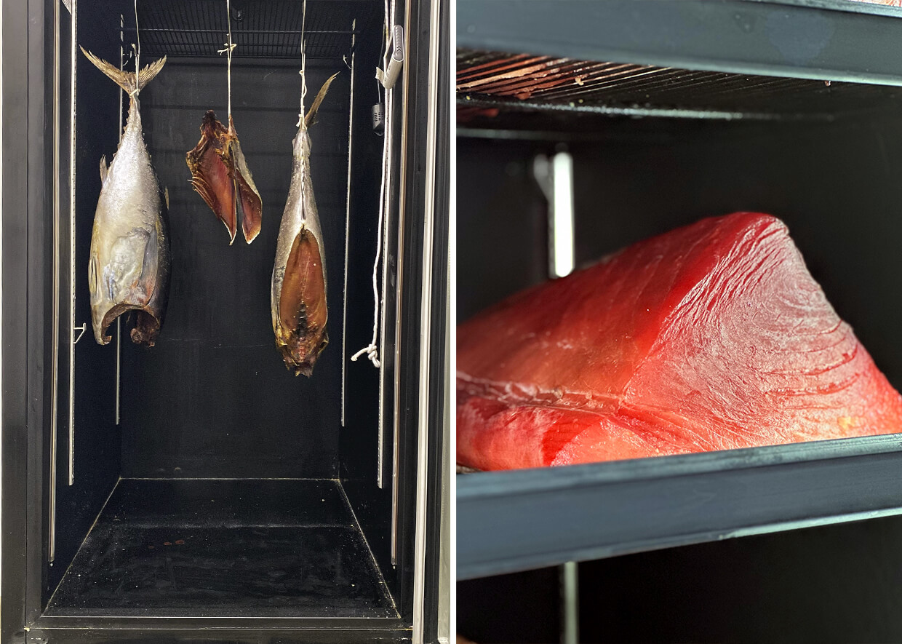

Conserve seus pescados frescos por muito mais tempo e ainda ganhe todos os benefícios da maturação.
As câmaras de maturação da Matura Meat® agregam valor e sabor as proteínas, garantem segurança alimentar, e reduzem a praticamente zero o desperdício de alimentos, pois conservam e mantém a qualidade dos peixes frescos por muito mais tempo
São três modelos diferentes para cada tipo de maturação. Conheça a câmara para dry fish:
Peça a sua agora mesmo →DRY FISH
Idealizada para maturação de peixes. Utilizada por restaurantes de peixes e frutos do mar, izakayas, restaurantes de cozinha oriental, peixarias, boutiques do mar, empórios gourmet, supermercados premium, sushi bares, temakerias, entre outros. Você pode maturar peixes inteiros ou lombos grandes. Considerada como o grande pilar da nova escola de conservação de pescados.
Principais Características da câmara para dry fish
- Controle de temperatura e umidade (com umidificador externo)
- Volume Interno de 572L
- Disponível apenas na cor preta
- Temperatura de Trabalho 0 a +3 graus celcius
- Umidade relativa com programação em 2 fases: Fase 1 UR de 45% e Fase 2 UR de 75%
- Túnel de vento com controle de ventilação (ar forçado)
- Voltagem 220v
- Acompanha um kit "Cabideiro" para pendurar peças
- Tratamento com ozônio e iluminação germicida
Clique no botão abaixo, saiba mais e fale com a nossa equipe para adquirir a sua:
Peça a sua agora mesmo →Com uma câmara Matura Meat®
DRY AGE você será capaz de:
- Aumentar a sua margem de lucro, agregando valor aos seus produtos.
- Oferecer produtos únicos e exclusivos aos clientes mais exigentes
- Economizar na mão-de-obra de manipulação de peixes na sua empresa
- Padronizar sua produção com regulagem de condições internas precisas e confiáveis
- Comprar pescados com mais qualidade e menor frequência
- Garantir segurança alimentar através do tratamento de ozônio e ilumação germicida
- Ter a certeza de que durante todo o tempo de maturação, os produtos estarão nas condições ideais e não irão estragar
- Agregar mais sabor, concentrando a gordura e as proteínas do alimento através da secagem da água e líquidos das proteínas
- Gerar mais textura e maciez.
- Acompanhar em tempo real a temperatura e umidade interna da câmara de maturação
- Se livrar do odor "fishy"(cheiro de peixe)
Nada melhor do que escutar quem já usa
Veja o que nossos clientes tem a dizer sobre nós:


Seu negócio antes da câmara de maturação da Matura Meat® DRY FISH
- Compra diária de pescados
- Dificuldade em encontrar bons peixes todos os dias
- Manipulação constante do estoque para melhor conservação.
- Alto consumo de gelo.
- Problemas com odor FISHY
- Não explorava o melhor que as grandes peças de peixes gordurosos podem oferecer
- Muito desperdício e perdas devido ao baixíssimo tempo de prateleira dos pescados
Seu Negócio depois da câmara de maturação da Matura Meat® DRY FISH
- Compras com menor frequência
- Estoque de peixes garantido por mais tempo
- Odor FISHY nunca mais
- Matura grandes peças de pescado gordo eleva o nível da sua cozinha
- Oferece-se pexies grelhados com pele croconhte e sequinha
- Desperdício ZERO
- Redução extrema da manipulação de peixes

Produzimos equipamentos que garantem a você perfeitas condições de umidade, temperatura e ventilação durante a maturação dos seus produtos, como: carnes, peixes, embutidos, queijos, salames, copas, presuntos, entre outros. A Matura Meat® é a primeira câmara de maturação a seco de proteínas
do Brasil e a única em toda América Latina com patente registrada.
Entregamos em todo o Brasil. Você recebe a câmara de maturação com manual completo de instalação e uma assessoria com o maior especialista do Brasil nos primeiros 45 dias de uso.
SANDRO GIOVANNONE
Em 2010 eu me apaixonei por uma vitrine de carnes dry aged no aeroporto de NY. No Brasil ainda não se falava muito disso. Desenvolvi um equipamento improvisado pra fazer meus experimentos. Os resultados foram ótimos, a carne se transformava, o sabor era maravilhoso. 5 anos depois entramos de cabeça na comercialização de equipamentos profissionais maturação a seco de proteinas, conseguimos a primeira patente da América Latina. Hoje vendemos para todo o Brasil e queremos mais. Nossas câmaras atendem a diferentes segmentos: dry age de carnes, dry fish, charcutaria e até mesmo laticinios. para Agregamos valor aos produtos dos nossos clientes, baixamos custos com desperdicio e mão de obra e garantimos segurança alimentar pra quem produz e quem consome.